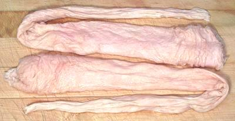

Pork Bung

[Hog Bung]
This is the rectum and large intestine of the pig. In the West it is
commonly used as a large sausage casing. In East and Southeast Asia it is
a popular street food. They are also prepared similarly in Mexico.
If sold for cooking it's called "Pork Bung", if sold for making sausages
it's called "Hog Bung". The photo specimens were 23 inches long, 2 inches
diameter at the big end and weighed 6-1/4 ounces.
More on Cuts of Pork.
Buying:
: If you intend to cook these, they're most easily
found in markets serving an East or Southeast Asian community. Look for
them in the frozen food cases. If buying for sausage making you can get
them from the usual purveyors of sausage casings.
Prep:
If you've just butchered your own pig, you've got
a good deal of scrubbing to do, and generally need to turn the bung
inside out to clean the inside. If you've bought a package in a North
American market, they're cleaned up and ready to go.
Cooking:
Generally these are simmered for an hour,
then sliced diagonally about 1 inch wide. They may be deep fried, often
wrapped around a scallion, or stir fried. If fried crisp they are usually
served with a dip. In Mexico also they are served with beans and
tortillas if still chewy, on there own (perhaps with hot sauce) if
crisp.
Yield:
If you've bought a 1 pound package you should
have about 8 ounces or so after simmering (50%).
ap_bungz 100118 - www.clovegarden.com
©Andrew Grygus - agryg@clovegaden.com - Photos on this
page not otherwise credited are © cg1 -
Linking to and non-commercial use of this page permitted